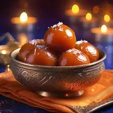
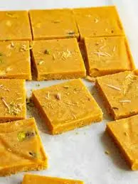
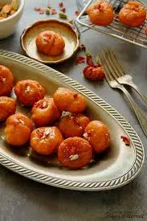
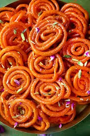
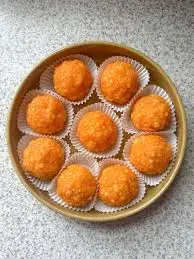

Gulab Jamun
Ingrediants
- मावा या खोया
- मैदा
- बेकिंग सोडा या बेकिंग पाउडर
- चीनी
- इलायची पाउडर
- केसर के धागे
- घी या तेल
- पिस्ता, बादाम, या सिल्वर वरक के लिए गार्निश
Process
- सबसे पहले मावा को अच्छी तरह से मैश कर लें.
- अब, मावा में बेकिंग सोडा डालकर डो बना लें.
- डो को सॉफ़्ट रखने के लिए इसमें दो बूंद घी डाल दें.
- कढ़ाई में घी डालें और उसे अच्छी तरह से गर्म करें.
- गैस को धीमी आंच पर रखें और गुलाब जामुन को फ़्राई करें.
- गुलाब जामुन को ब्राउन तब तक बाहर न निकालें, जब तक कि वह ब्राउन न हो जाए.
- फ़्राई करने के बाद, गुलाब जामुन को चाशनी में डालें.
- चाशनी में गुलाब जामुन को डालकर कुछ देर के लिए ढककर रख दें.
- अब, गुलाब जामुन को ड्राई फ़्रूट्स से गार्निश करके सर्व करें.

Barfi
Ingrediants
- घी
- मैदा
- चीनी
- दूध
- इलायची पाउडर
- टूटी हुई फ्रूटियां चाहिए
Process
- एक पैन में घी गरम करें और उसमें मैदा डालकर भून लें.
- एक भगोनी में चीनी और पानी डालकर एक तार की चाशनी बना लें.
- धीरे-धीरे भूनी हुई मैदा को चाशनी में डालें और चलाते रहें.
- थोड़ी देर चलाने के बाद इसमें मिल्क पाउडर डालें और चलाते रहें.
- अब इसमें इलायची पाउडर और टूटी हुई फ्रूटियां डालकर चलाएं.
- जब मिश्रण पैन छोड़ने लगे, तब एक प्लेट या सर्विंग ट्रे में घी लगाकर पूरे में फैलाएं और मिश्रण को इसमें निकाल लें.
- थोड़ी देर ठंडा होने के बाद चांदी के वर्क से सजाएं और बर्फ़ी के आकार में काट लें.

Laung Latta
Ingrediants
- घी
- मैदा
- चीनी
- दूध
- मावा या खोया
- इलायची पाउडर
- टूटी हुई फ्रूटियां चाहिए
Process
- मैदे में मोयन डालें और पानी की सहायता से आटा गूँथ लें|10मिनट ढक कर रखे |केवल 1/4कप पानी यूज़ किया है|खोया कद्दूकस करके नॉन स्टिक कढ़ाई में5मिनट धीमी गैस पर भून लें|1टेबल स्पून मैदेमें 1टेबल स्पून पानी मिलाकर किनारे चिपकाने के लिए घोल बना लें|
- खोया ठंडा होने दें और बूरा और महीन कटे ड्राईफ्रूट्स मिलाकर स्टफ़िंग बना लें|आटे से नींबूके आकार के पेड़े बना लें|छोटी पूरी बना कर थोड़ी सी स्टफ़िंग रखे|एक किनारे पर मैदे का घोल लगाये |चित्रा नुसार मोड़ लें और अच्छी तरह चिपका लें|
- फिर सेएक किनारे पर मैदे का घोल लगाये और चित्रा नुसार मोड़ कर रुमाल की तरह मोड़ लें|लौंग लगा दें और असली घी में सुनहरा होने तक दोनों तरफ से शेक लें|
- चीनी और पानी मिलाकर एक तार की चाशनी बना लें औरइलायची पाउडर डाल दें|सिंकी हुई लौंग लता को चाशनी में डालें|
- और थोड़ी देर चाशनी में पड़े रहने दें|चाशनी से निकालकर प्लेट में निकालें और थोड़ा सूखने दें|स्वादिष्ट लोंगलता तैयार हैँ|
Balu Shahi
Ingrediants
- घी
- मैदा
- चीनी
- दूध
- इलायची पाउडर
- टूटी हुई फ्रूटियां चाहिए
Process
- सबसे पहले एक मिक्सिंग बाउल लें और उसमें मैदा छानकर डाल दीजिए. स्वाद के लिए इस मैदे में एक चुटकी नमक डालें.
- अब आटा लें और उसमें बेकिंग पाउडर डालकर अच्छी तरह से मिला लें. आधा कप घी डालकर पूरी सामग्री मिला लें. थोड़ा-थोड़ा पानी डालकर आटे को मिला लें.
- आटे को अच्छी तरह से गूंथना नहीं है. इसे हल्के हाथों से जोड़ना है ताकि बालूशाही की लेयर अच्छी तरह बन सके.
- जब आटा पूरी तरह मिक्स हो जाए तो उसे करीब 15 मिनट के लिए छोड़ दें.
- अब चाशनी बनाने के लिए एक पैन लें और उसमें एक कप पानी और चीनी डालकर अच्छी तरह हिलाते रहें.
- जब पानी में चीनी घुल जाए तो उसमें फूड कलर मात्रा के अनुसार डालें और करीब 2 मिनट तक चलाएं.
- अगर केसर डालना है तो उसे और कूटी हुई इलायची डालकर तब तक पकाएं जब तक की चाशनी पूरी तरह तैयार न हो जाए.
- रेस्टिंग करने के लिए आटे को लें और इसे गूंथे बिना ही इसकी गोल-गोल लोई बनाएं. इस लोई को हल्के हाथों से दबाएं और बेलनी की मदद से बीच से छेद कर लें.
- जब सभी लोइयां तैयार हो जाए तब एक कढ़ाई लें और उसमें तेल या घी डालें और धीमी आंच पर गर्म करें.
- जब तेल हल्का गर्म हो जाए तो उसमें बालूशाही डालें और बबल बनने और सुनहरी होने तक पकाएं.
- बालूशाही निकालने के बाद उसे चाशनी में डालकर करीब 2 से 3 मिनट तक डुबोकर रखें.
- अब इसके ऊपर पिस्ता और ड्राई फ्रूट सजाएं.
- खस्ता और टेस्टी बालुशाही तैयार है, इसे सर्व करें.

Gujiya
Ingrediants
- घी
- मैदा
- चीनी
- दूध
- इलायची पाउडर
- टूटी हुई फ्रूटियां चाहिए
Process
- सबसे पहले ¼ कप घी और पानी में मैदे को अच्छे से गूंथ लें।
- इसके बाद इसे कढ़ीब आधे घंटे के लिए रखकर छोड़ दें।
- खोए को हल्की आंच पर थोड़ी देर के लिए भूनें।
- इसके ठंडा हो जाने पर इसमें बादाम, इलायची पाउडर और चीनी मिलाएं।
- गूंथे हुए मैदा की लोई बनाकर गोल पूरी बेल लें और उसमें बनाया गया मिक्सचर भरें।
- किनारों पर हल्का पानी लगाकर उसे बंद करें।
- फैंसी कटर की मदद से उसके किनारों को शेप दें।
- फिर घी को कढ़ाही में गर्म करें और हल्की आंच पर बनाई गई गुजिया को तब तक तलें जब तक वह हल्के भूरे रंग की न हो जाएं।
- 1 पैन में चीनी और पानी डालकर चाश्नी तैयार करें।
- इसके बाद तली हुई गुजिया को चाश्नी में डालकर डिप करें और प्लेट में हल्का सूखने के लिए रख दें।
- ठंडा होने पर गुजिया को डब्बे में पैक करके रख दें या सर्व करें।
Jalebi
Ingrediants
- 1/2 कप मैदा
- 1/4 कप दही
- (फ्राई करने के लिए) तेल या घी
- जिसके बीच में छेद हुआ हो कपड़ा
- 1 कप चीनी
- 1 कप पानी
- 1/2 टी स्पून केसर
Process
- सबसे पहले मैदे और दही को एक साथ मिलाकर गाढ़ा बैटर तैयार कर लें।
- अगर ज़रूरत पड़े, तो आप इसमें पानी भी डाल सकते हैं।
- करीब छह से सात घंटे के लिए इसमें खमीर उठने को रख दें।
- जब बैटर गुदागुदा हो जाए और ऊपर छाग दिखने लगे, तो चाशनी तैयार करें।
- पानी, चीनी और केसर को मिलाकर हल्की आंच पर चाश्नी बनाएं।
- तेज़ आंच पर छोड़े समय के लिए चाश्नी को गाढ़ा करें।
- जब चाश्नी तार छोड़ने लगे, तो इसे आंच से उतार कर हल्का ठंडा कर लें।
- एक गहरा पैन लें। उसमें तेल या घी डालकर गर्म कर लें।
- बैग में तैयार किया बैटर डालें। जितना छोटा छेद होगा, उतनी ही पतली जलेबी बनाएंगी।
- अब बैटर को गर्म तेल में डालें। मीडियम आंच पर पकाएं। पलटें।
- जब जलेबी दोनों तरफ से हल्के भूरे रंग की हो जाएं, तो इन्हें निकाल लें। चाश्नी में डालें।
- करीब एक मिनट तक इन्हें चाश्नी में भिगा रहने दें। निकाल कर सर्व करें।

Laddu
Ingrediants
- 2 कप बेसन
- 1/2 कप घी
- ¾ (पिसी हुई) कप चीनी
- ¼ इलायची पाउडर
- बादाम, टुकड़ों में कटा हुआ
- चांदी का वर्कपिस्ता, टुकड़ों में कटा हुआ
Process
- कढ़ाही में घी और बेसन को मिक्स करें और कढ़ीब 30 मिनट के लिए हल्की आंच पर छोड़ दें। इसे तब तक भूनें जब तक इसका कलर भूरे रंग का न हो जाए।
- इसका रंग हल्का ब्राउन रहना चाहि। आंच बंद कर दें और इस मिश्रण को पूरी तरह ठंडा होने दें।
- इसके बाद इसे ठंडा होने के लिए रख दें। ठंडा हो जाने पर इसमें चीनी का पाउडर और इलायची पाउडर मिक्स करें।
- इन लड्डूओं को आप 4 से 6 सप्ताह के लिए एयरटाइट डिब्बे में रख सकते हैं।
- दोनों चीजों को अच्छी तरह मिला लेने के बाद अपनी हथेलियों का इस्तेमाल कर लड्डू तैयार करें।
- गार्निशिंग के लिए इसके ऊपर चांदी का वर्क और बादाम लगाएं। सर्व करें।

Peda
Ingrediants
- 1/2 kg खोया
- 60 ग्राम घी(पाउडर )
- 1/2 kg चीनी
- स्वादानुसार इलायची पाउडर
Process
- अगर आप घर पर ही खोया बनाना चाहते हैं, तो दूध को उबालते हुए लगातार चलाते रहे, जब तक यह गाड़ा न हो जाए।
- एक पैन में घी और खोया को एक साथ डालकर भूनें, जब तक मिक्सचर हल्के भूरे रंग का न हो जाए।
- इसके बाद इसमें इलायची पाउडर डालकर ठंडा होने के लिए रख दें।
- जब मिक्सचर ठंडा हो जाए, तो इसमें चीनी डालकर मिलाएं।
- अच्छी तरह मिला लेने के बाद इसे अपनी पसंद का आकार देकर परोसें।